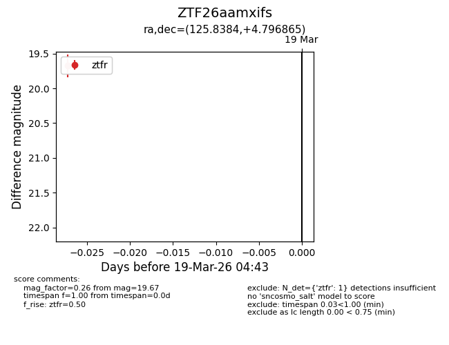
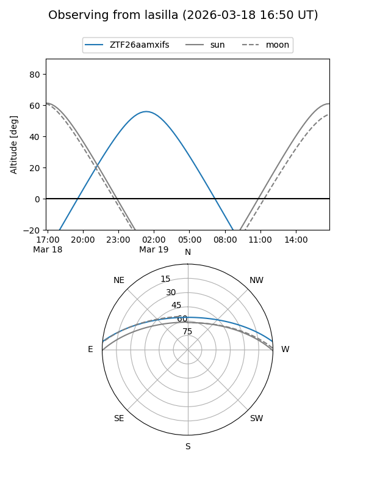
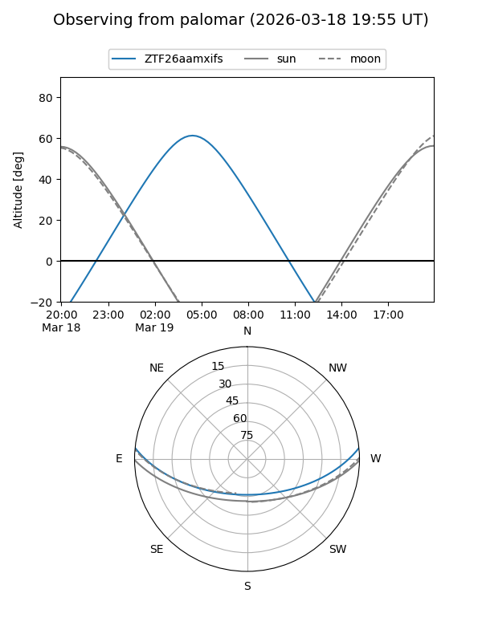

ZTF26aamxifs
Target ZTF26aamxifs at 2026-03-19 04:45
Aliases and brokers:
FINK: link
Lasair: link
ALeRCE: link
alt names
ZTF26aamxifs (ztf,fink_ztf)
Coordinates:
equatorial (ra, dec) = 125.8384,+4.79686
equatorial (HMS+DMS) = 08:23:21.22,+04:47:48.71
galactic (l, b) = (219.3356,+22.60392)
Flags:
Photometry:
last ztfr=19.67
1 ztfr detections
Lightcurve

Visibility


Additional plots